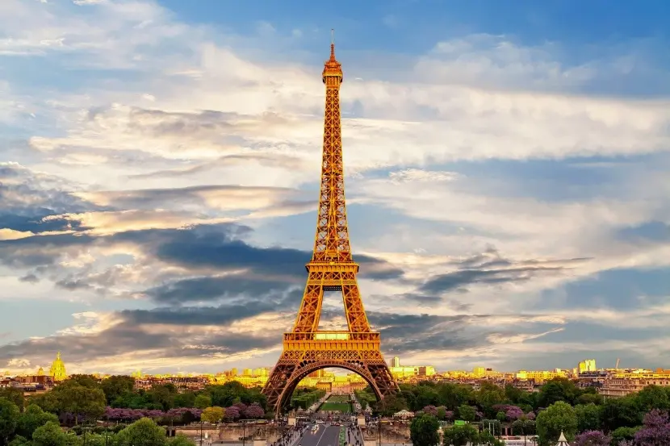

Paryż, Francja

Paryż, nazywany również Miastem Świateł, jest jednym z najbardziej ikonicznych miast na świecie, znany ze swojego piękna, historii, kultury i romantyzmu. Od majestatycznych zabytków po malownicze bulwary nad Sekwaną, Paryż fascynuje odwiedzających swoim urokiem i bogactwem atrakcji turystycznych.
**Najważniejsze atrakcje turystyczne w Paryżu:**
1. **Wieża Eiffla**: Symbol Paryża i Francji, wieża Eiffla jest ikoną architektury, oferując panoramiczne widoki na miasto z jej trzech poziomów widokowych.
2. **Luwr**: Jedno z największych i najważniejszych muzeów sztuki na świecie, Luwr zawiera niezwykłą kolekcję dzieł sztuki, w tym Mona Lisę, Wenus z Milo i wiele innych arcydzieł.
3. **Katedra Notre-Dame**: Majestatyczna gotycka katedra, będąca symbolem francuskiej architektury sakralnej, przyciąga tłumy swoją imponującą fasadą i wnętrzem.
4. **Polach Elizejskich**: Słynna aleja, otoczona drzewami i eleganckimi budynkami, pełniąca rolę centrum handlowego, rozrywkowego i kulturalnego Paryża.
5. **Dzielnica Montmartre**: Malownicza dzielnica artystyczna, znana z białych młynów i kawiarni, gdzie można poczuć ducha bohemy i podziwiać widoki na miasto.
6. **Panteon**: Monumentalna neoklasyczna budowla, będąca miejscem pochówku wielu słynnych postaci z historii Francji.
7. **Luksusowe sklepy na Polach Elizejskich**: Paryż to raj dla miłośników mody, z butikami światowej sławy projektantów, gdzie można znaleźć najnowsze trendy i najwyższej jakości wyroby.
To tylko wierzchołek góry lodowej, jeśli chodzi o atrakcje Paryża. Miasto to urzeka swoimi ulicami pełnymi kawiarni, słynnymi muzeami, romantycznymi mostami nad Sekwaną i bogatą kulturą, przyciągając miliony turystów z całego świata każdego roku.
Powrót do strony głównej